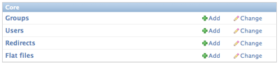
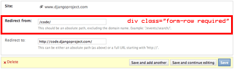

| revision-up-to: | 8961 (1.0) Warning このドキュメントが書かれた後に admin の設計は変更されました。そのため、 ここに書かれている内容はもはやあてはまりません。 Django の admin をカ スタマイズするための API は別途開発されているので、このドキュメントは もはやメンテナンスされていません。 |
|---|
Django が動的に生成する admin インタフェースは、コードを書かずに使える完全 な機能を備えた admin を提供しています。 admin は動的管理サイト構築の単なる 足掛かりではなく、実運用の環境でそのまま使えるだけの機能を備えています。 admin ページの根底にある形式は Django で構築されていますが、 admin のスタイ ルシートや画像を編集すればルック & フィールをカスタマイズできます。
このドキュメントでは、 Django の admin の CSS で使われている主要なスタイル とクラスについてざっと紹介します。
admin 上ではコンテンツをグループ化する基本の構成要素として .module クラ スを使っています。 .module は div や fieldset に適用されます。 .module はコンテンツのグループをボックス内にラップし。その中身に一定の スタイルを適用します。例えば、 div.module 内の h2 タグは、グループ 全体のヘッダになるよう、 div の上に配置されます。
Note
管理ページは (ダッシュボード部分を除いて) 全て可変幅 (fluid-width) になっ ており、以前の Django にあった固定幅のクラスは全て除去されています。
admin ページのベーステンプレートには、ページのカラム構造を決めるブロックが あります。このブロックにはページのコンテンツ領域 (div#content) のクラス を定義し、コンテンツ領域の幅がわかるようにします。指定できるカラムタイプは 3 種類あります。
例えば、以下のようなコードをテンプレートに張り付ければ、右側のサイドバーを 2 カラムのページにできるでしょう:
{% block coltype %}colMS{% endblock %}
スタイルシートには、ほとんどの HTML 要素 (ヘッダ、リストなど) に対して コンテキストに応じてベースフォントサイズを指定しています。テキストを 特定のサイズに強制する 3 つのクラスがあります。
テキストのスタイルもいくつかあります。
フォームやチェンジリストのページには、オブジェクトに直接適用される操作への リンクがあります。これらのリンクはチェンジリストの上にある「ツールバー」行 の右側に表示されます。 ツールは object-tools クラスの ul でラップ されています。ツールには二つのカスタムのタイプがあり、ツール内で a タグ に指定して使うようになっています。 .addlink と .viewsitelink です。
チェンジリストページではこのようになります:
<ul class="object-tools">
<li><a href="/stories/add/" class="addlink">Add redirect</a></li>
</ul>
フォームページでは以下のようになっています:
<ul class="object-tools">
<li><a href="/history/303/152383/">History</a></li>
<li><a href="/r/303/152383/" class="viewsitelink">View on site</a></li>
</ul>
admin のフォームは fieldset エレメントでグループごとに分けられています。 各フィールドセットには .module クラスがなくてはなりません。また、 各フィールドセットの先頭には h2 タグによるヘッダがなくてはなりません (ただし、フォームの最初のグループや、フィールドグループに論理的なラベル を必要としない場合は除きます)。
また、各フィールドセットに .module 以外の追加のクラスを指定して、フィー ルドグループ全体が適当なフォーマットになるようにしてもかまいません。
(fieldset 内の) フォームの各行は form-row クラスの div で囲わね ばなりません。行内に収めるフィールドが必須のフィールドの場合、 div.form-row には required クラスを追加せねばなりません。
チェックボックスとラジオボタンを除き、フォームのラベルは常にフィールドの前 にきます。チェックボックスやラジオボックスの場合には input タグが先にき ます。 label タグ以降の説明文やヘルプテキストは、 .help クラスの p タグに入ります。
Aug 31, 2012